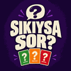

Arkadaş grupları için cesaret ve itiraf oyunu 🎲
Sırası gelen oyuncu bir kart çeker ve soruyu tek başına görür. Cevabını yüksek sesle herkese söyler — sonra ya soruyu herkese gösterir ya da cezasını çeker! Kart destenin en altına konur ve sıra bir sonraki oyuncuya geçer.
Kuralı basit: soru göstermek istemeyen ceza görür, ne kadar zorsa o kadar eğlenceli 😏